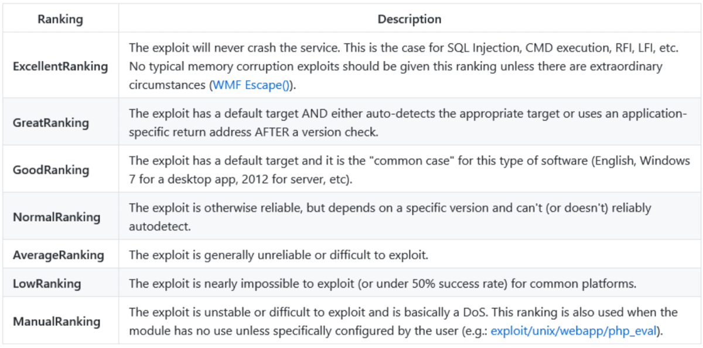

msfconsole
Modules in Metasploit Framework:
Location: /usr/share/metasploit-framework/modules
Auxiliary: Any supporting module, such as scanners, crawlers and fuzzers, can be found here.
Encoders: Encoders will allow you to encode the exploit and payload in the hope that a signature-based antivirus solution may miss them.
Evasion: While encoders will encode the payload, they should not be considered a direct attempt to evade antivirus software. For this we use Evasion.
Exploits: Exploits, neatly organized by target system.
NOPs: NOPs (No OPeration) do nothing, literally. CPU will do nothing for one cycle. They are often used as a buffer to achieve consistent payload sizes.
Payloads: Payloads are codes that will run on the target system.
----3 Types----
Singles: Self-contained payloads (add user, launch notepad.exe, etc.) that do not need to download an additional component to run.
Stagers: Responsible for setting up a connection channel between Metasploit and the target system. Useful when working with staged payloads. “Staged payloads” will first upload a stager on the target system then download the rest of the payload (stage). This provides some advantages as the initial size of the payload will be relatively small compared to the full payload sent at once.
Stages: Downloaded by the stager. This will allow you to use larger sized payloads.
Post: Post modules will be useful on the final stage of the penetration testing process listed above, post-exploitation.
Summary:
Stageless ---> Singles
Staged ---> Stagers + Stages
msfconsole:
(Acts as a normal shell)
help search : To get details about search and all complex filters
ls : List contents of dir from where msfconsole was launched
ping -c1 google.com : Example of Ping command in msfconsole
clear : Used to clear the screen
history : Used to find previous commands
Note: No Output redirection
use <module name> : Used to select an module eg. use exploit/windows/smb/ms17_010_eternalblue
show <mdole name>: Used to show about a particular module. eg. show all, show auxillary
show options : Used to print the options for a particular context (Module).
show payloads : USed to list payloads for a particular exploit
back : To leave and exit a context/module
info : Further information about any module (From inside a context)
info <mdoule> : To show info about any module.
search <module> : You can conduct searches using CVE numbers, exploit names (eternalblue, heartbleed, etc.), or target system.
eg. search type:auxillary telnet
Ranking:

Setting Options:
set PARAMETER_NAME VALUE : Used to set VALUE for the PARAMETER_NAME
set RHOST 10.0.0.2 : Single IP
set RHOST 10.0.0.2-10.0.0.25 : Range
set RHOST 10.0.0.2/24 : Range in CIDR(Classless Inter Domain Routing) notation
set RHOST file:/home/targets.txt : Range of IP in file (One per line)
unset PARAMETER_NAME : Removes the particular parameter value
unset all : Removes the stored value of all parameters
setg PARAMETER_NAME VALUE : Global Parameter setting (Sets till you exit metasploit or use unsetg)
unsetg PARAMETER_NAME : Global Parameter reset
Launching & Backgrond:
run : To Launch the module
exploit : To Launch the module
exploit -z : To Launch the module in background
exploit -j : To Launch a job in background
check : Few modules support check. It is used to check if the target system is vulnerable without exploiting it
background or Ctrl+z : To move a session to background
sessions : It shows all the sessions
sessions -h ; To show all options of session command
sessions -i <id> : To interact with the session
Usage:
Auxiliary:
auxiliary/scanner/portscan/tcp
auxiliary/scanner/discovery/udp_sweep
auxiliary/scanner/smb/smb_version
auxiliary/scanner/http/http_version
auxiliary/scanner/smb/smb_login
Exploits:
exploit/windows/smb/psexec : Admin username and password is required
exploit/windows/local/bypassuac_eventvwr : Used for windows Priviege Escalation
exploit/windows/http/icecast_header : Exec Code Execution for Icecast Steaming Media Server
Post:
post/windows/gather/enum_domain : Used to enumerate domains
post/windows/gather/enum_shares : Used to enumerate shares
post/windows/gather/hashdump : To get the local hashes
Metasploit Database Integration:
systemctl start postgresql.service : Start Postgresql that Metasploit will use
msfdb init : initialize the db in Metasploit
Inside msfconsole:
db_status : To check status of db in metasploit
workspace : Used to show the current workspace (Default). We can use different for different projects
workspace -a tryhackme : To add a workspace named tryhackme
workspace -d tryhackme : To delete a workspace named tryhackme
workspace default : To navigate between workspaces
workspace -h : To list all workspace commands
To Run nmap:
db_nmap -sV -sC <Target_IP> : Runs nmap and stores inside the database
hosts : List all scanned hosts
services ; List all scanned services
hosts -h : For more options. eg hosts -R :Will add the items in hosts to RHOST of an exploit/payload
services -h : For more options. eg services -S netbios :Will search for the service in database